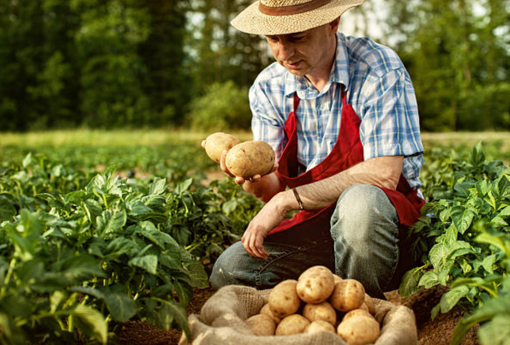
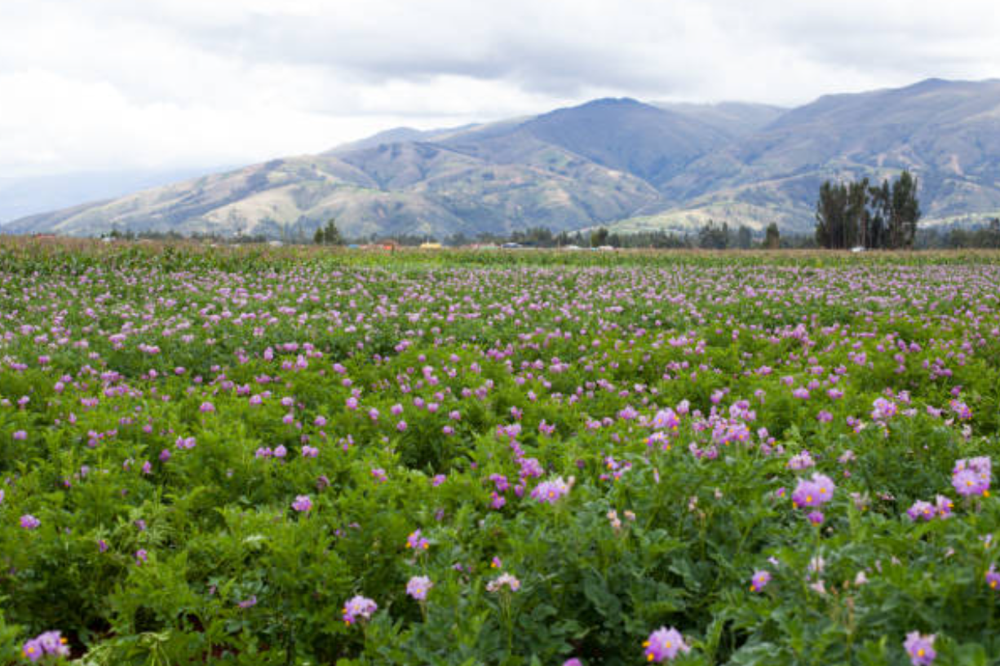
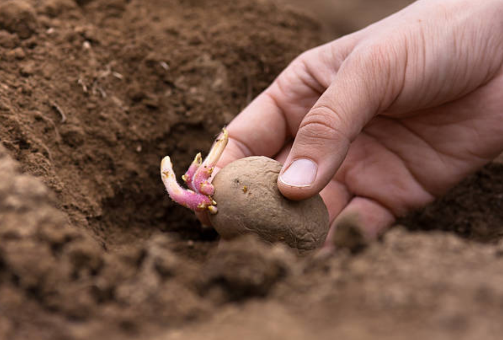
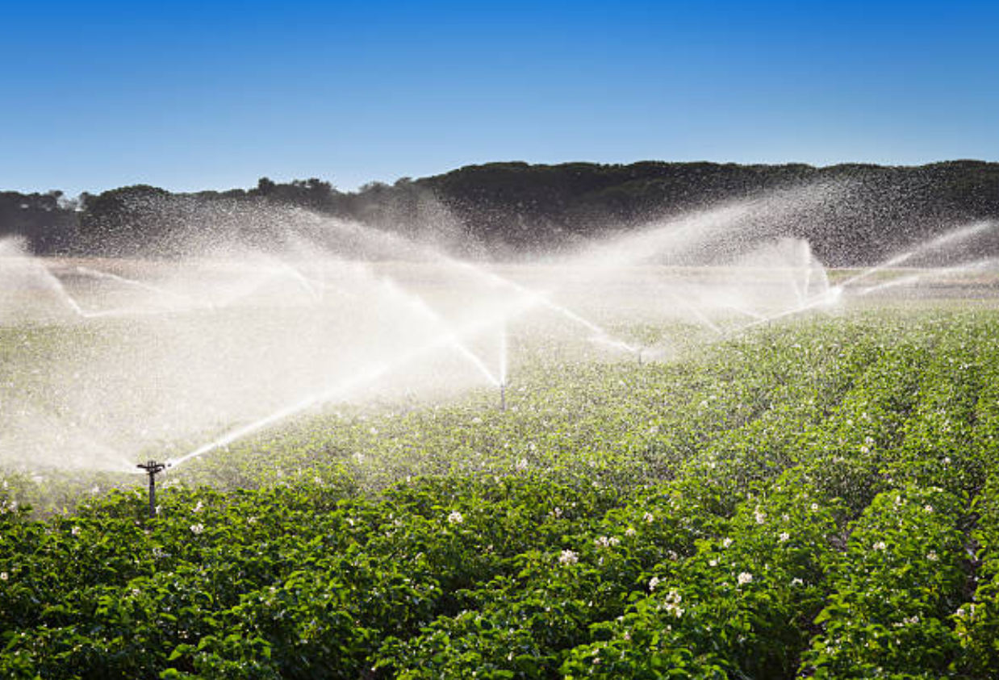
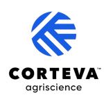

Recomendaciones para cultivo de papa, Optimiza tu siembra ahora
Sabemos que la papa es fundamental. Aquí te dejamos las mejores prácticas, para que cuides tu cultivo en cada etapa y logres una cosecha exitosa. ¡Revisa y aplica estos consejos clave!
Explorar
Monitoreo
Recomendado al menos dos veces por semana, constituye una práctica agrícola fundamental para la gestión proactiva de la producción. Esta vigilancia rigurosa es esencial para identificar con rapidez cualquier anomalía fitosanitaria o indicio de estrés por variabilidad climática, permitiendo a los productores de la Provincia de Ubaté implementar las medidas de control y mitigación en el momento preciso para asegurar la viabilidad de la cosecha.

Rotación del cultivo
La rotación de cultivos es esencial para mantener la salud del suelo. Se debe evitar plantar papa de manera consecutiva en el mismo terreno. Al alternar la papa con otros cultivos, se interrumpe eficazmente el ciclo de vida de los patógenos y plagas que residen en el suelo, logrando así reducir su población y, por ende, el riesgo de infecciones en las futuras cosechas.

Uso de semilla certificada
El uso de semilla certificada es la base para establecer un cultivo sano. Emplear tubérculos-semilla que hayan sido inspeccionados y certificados por las autoridades competentes garantiza que estén libres de enfermedades y plagas de transmisión inicial, lo cual es la mejor medida preventiva para evitar la introducción de problemas fitosanitarios graves y asegurar un buen arranque vegetativo en el cultivo de papa.

Fertilización y riego
Para que la papa sea menos vulnerable a las enfermedades, es necesario un manejo optimizado de los recursos. Controlar la fertilización y el suministro de agua para garantizar un buen estado nutricional y evitar periodos de sequía o exceso, fortalece las defensas de la planta y le permite soportar mejor la amenaza de agentes infecciosos como el fitoplasma.
Desinfectar equipos
La desinfección de equipos y herramientas es una medida de bioseguridad indispensable para evitar la propagación de enfermedades y plagas entre diferentes lotes o fincas. Se debe asegurar la limpieza rigurosa y desinfección de toda la maquinaria, vehículos y herramientas de cultivo (como palas o aporcadoras) antes de trasladarlos de un área potencialmente afectada a una zona sana.
Fuentes
Aliados informativos oficiales
Fedepapa
MinAgricultura
Agrosavia
